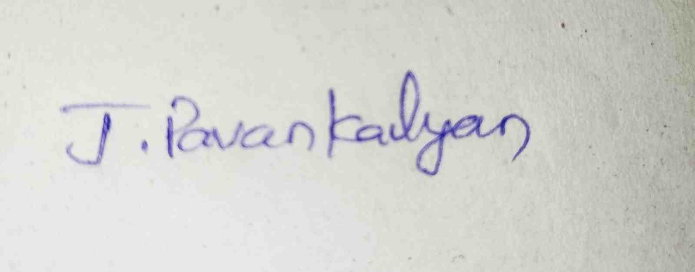

Javvaji Pavan Kalyan

Varikole,Nadikuda,Hanumkonda,Telangana-506391 | +(91)-8179280271
Gmail:javvajipavankalyan@gmail.com
Varikole,Nadikuda,Hanumkonda,Telangana-506391 | +(91)-8179280271
Gmail:javvajipavankalyan@gmail.com
Seeking a challenging summer internship opportunity with Citi’s equity business to leverage my strong analytical background,programming skills,and passion for quantitative finance in developing cutting edge analytics tools and models.
Bachelor of Technology –Computer Science and Engineering 2020-2024
Marri Laxman Reddy Institute of Technology and Management, Hyderabad 7.5 CGPA
Intermediate 2018-2020
Shivani Junior College,Hanumakonda 93.3%
School Certificate – 2018
S V High School,Rayaparthi,Parkal 8.2 GPA
• Web Development Internship Done In InternPe Company Online Mode
• Encryption And Decryption Of A File Using Safe Key
• Spam detection on social networks
Javvaji Pavan Kalyan
